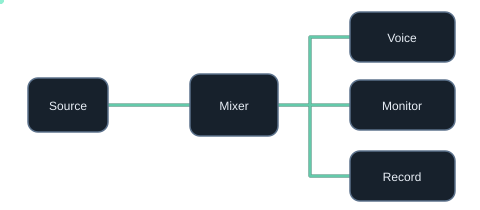
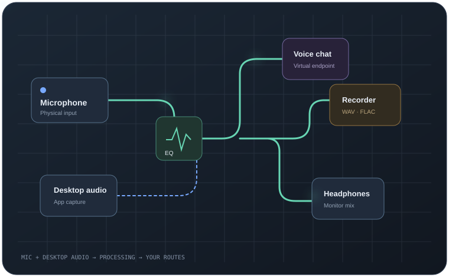
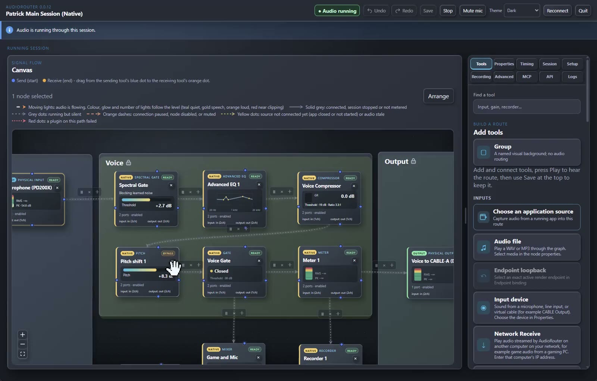
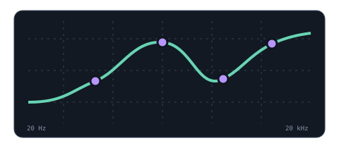
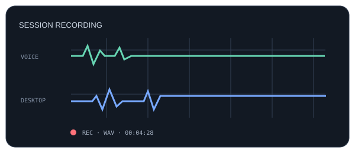
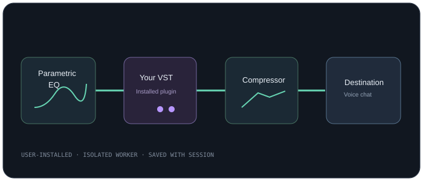
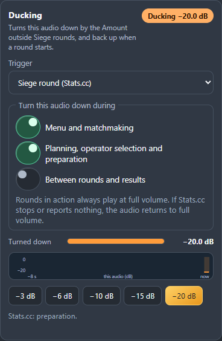
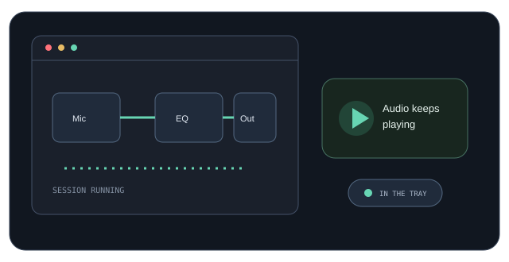

01 / Route
Make routing make sense
Connect devices, app audio, mixers, and outputs on a canvas. Branch once and give each destination its own mix.
Explore routing →Bring your apps, microphones, effects, and recordings into one clear signal flow. Powerful enough to customize. Simple enough to see what goes where.

Mic + desktop audio → processing → destinationsThe developer's own daily setup, recorded live: microphone, game and chat audio, each branch shaped for its destination and visible while it plays.

Build a route visually, then shape each branch for the people and apps that need it.

Connect devices, app audio, mixers, and outputs on a canvas. Branch once and give each destination its own mix.
Explore routing →
Clean up a mic, balance a mix, or add character with built-in tools and compatible VST effects.
Explore processing →
Record separate branches to WAV or FLAC while your live route keeps running.
Explore recording →Use built-in EQ and dynamics, then add compatible installed x64 VST3 effects and qualified x64 VST2 audio effects. Plugins stay yours; AudioRouter doesn't bundle or redistribute them.
See plugin hosting →
Explore the actual Duck control in the app, then watch the AudioRouter walkthrough.

Use dedicated keys for Play/Stop, session switching, recording, level, toggles, meters, and privacy mute.
Explore Stream Deck controls →Send and receive audio over your local network with explicit endpoints and a configurable jitter buffer.
Browse the complete tool catalog →A missing or failed protected voice processor produces silence until you deliberately recover it. No surprise input swaps.
Learn what to check →AudioRouter can keep a running session alive in the tray while freeing the editor window and its WebView processes.
In a measured Windows 11 run, closing the window released six WebView processes (about 302 MB) while audio stayed live; the remaining shell used about 31 MB. A separate fresh tray launch before device consent measured 4 MB. Results vary by machine and workload.
Tray Play/Stop, start-at-sign-in, optional autoplay, session memory, privacy mute, and local network diagnostics make the app practical between edits.
Read release notes →
Use the canvas, connect your software through the local API, or let an MCP client help manage a route.
No account, no subscription, no cloud. Everything runs on your PC.
Download the free installer. Previews are unsigned, so Windows may ask you to confirm with More info → Run anyway.
Allow device access once, then place a microphone input and an output on the canvas. Add an EQ or gate if you like.
Connect the blocks, press Play and talk. The meters show exactly where your signal goes.